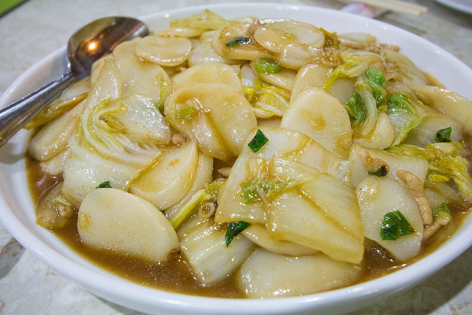

Shanghainese Nian Gao

Description
The Shanghai nian gao style is usually packaged in a thick soft rod to be sliced up or packaged pre-sliced and either stir-fried or added to soup. Depending on the cooking method, this style is a soft to a chewy variant. The Shanghai style keeps the nian gao white, and made with non-glutinous rice. The color is its distinct feature.
When served as a dish, the most common is the stir-fry method, hence the name (炒年糕, chǎo nián gāo). There are three general types. The first is a savory dish, common ingredients include scallions, beef, pork, cabbage, Chinese cabbage etc. The second is a sweet version using standard white sugar. The last version is taste-less, and is often consumed for its chewy textures.
This recipe will be for the first type.
Ingredients
- Nian Gao
- Nappa Cabbage
- Pork (or any protein of choice)
- Ginger
- Garlic
- Scallions
- Lee Kum Kee Seasoning Soy Sauce (or any soy sauce)
- Oil
- Water
Steps
- Chop 2-3 stalks of scallions into small pieces.
- Cut off two small slices of ginger.
- Crush or mince 2-3 cloves of garlic.
- Slice your desired amount of pork or protein of choice into small, thin strips.
- Marinate meat in small bowl with soy sauce, garlic, ginger, and scallions for at least 2 hours.
- Portion out how much nian gao you want and set aside in a bowl with water to soak.
- Rip off how many leaves of cabbage you want. Anywhere from 3-5 usually is enough for one serving.
- Chop the leaves width-wise to desired thickness.
- Pour a small amount of oil into a wok or pan.
- Turn on heat and set to high.
- After a couple minutes, put meat in and cook until outside seared, but not cooked all the way through.
- Take meat out and set aside. Put the cabbage in and cook for a few minutes or just until searing marks are visible.
- Once cabbage is thoroughly cooked, drain the water from the nian gao and put in.
- Add 2-3 tablespoons of soy sauce. Add more to taste if needed.
- Add the partially cooked meat.
- Stir fry for a couple minutes. Afterwards, pour in roughly 1-2 cups of water and cover the wok or pan.
- Keep covered and let everything steam for about 5 minutes.
- Lift cover and check texture of the nian gao. If it is too firm, continue steaming for a couple more minutes.
- Scoop into a bowl and serve. Enjoy!